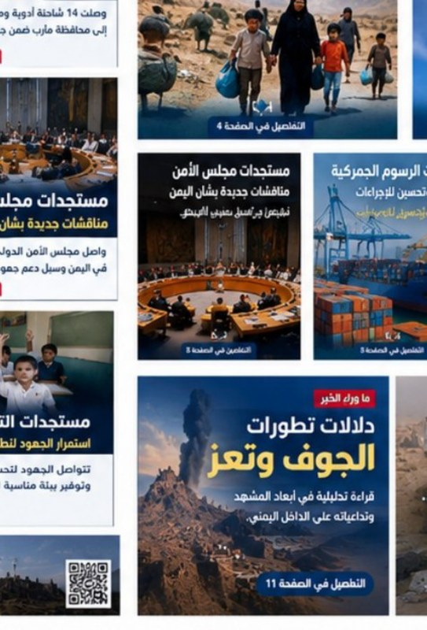

السعودية • رسم تحريريتكليف رئيس هيئة الأركان بأعمال قائد القوات المشتركة
قضى أمر ملكي سعودي الاثنين بأن يتولى الفريق الأول الركن فياض الرويلي أعمال قائد القوات المشتركة إلى جانب رئاسته هيئة الأركان العامة. وأوردت سبأ خبر التكليف في تغطيتها الإقليمية.
التفاصيل في المصدر — وكالة سبأ 
إغاثة • صورة أرشيفية توضيحيةلقاء في عدن يبحث احتياجات النازحين مع مديري مديريات يافع
التقى وزير الشؤون الاجتماعية والعمل مختار اليافعي الاثنين عدداً من مديري مديريات يافع في لحج. وناقش اللقاء ما تقدمه الجهات الحكومية والأهالي للأسر النازحة عقب الهجمات الأخيرة.
التفاصيل في المصدر — صحيفة الأيام طقس • رسم تحريريالأرصاد تتوقع أمطاراً متفرقة على أجزاء من السواحل
أشارت نشرة الاثنين إلى احتمال أمطار متفرقة على أجزاء من السواحل الغربية والجنوبية، ونبّه المركز إلى مخاطر التواجد في مجاري السيول. هذه توقعات النشرة الصادرة في 16 نوفمبر.
التفاصيل في المصدر — سبأ عبر نبض